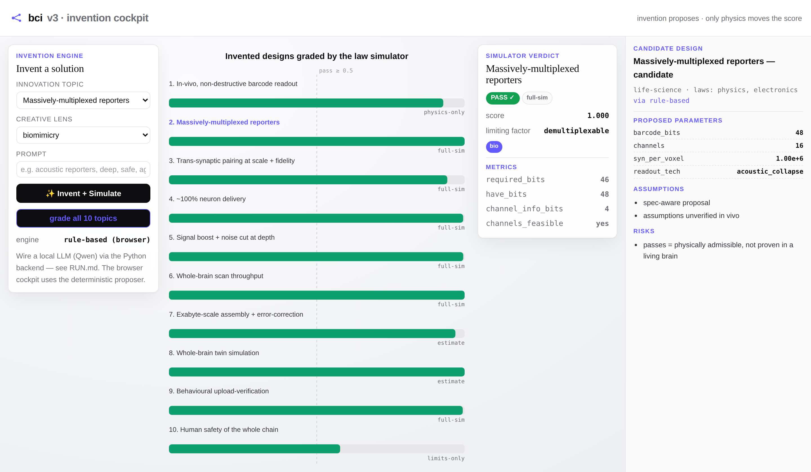
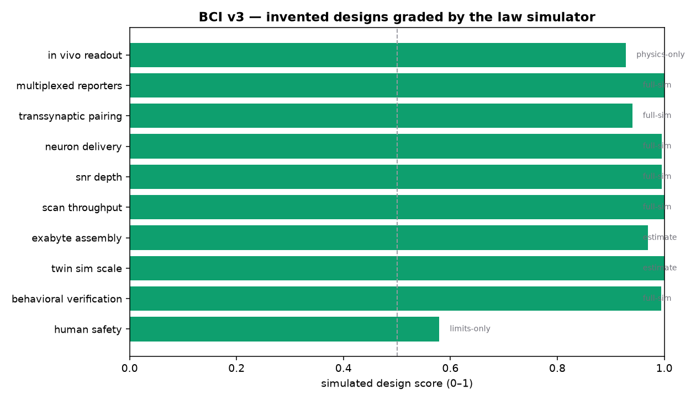
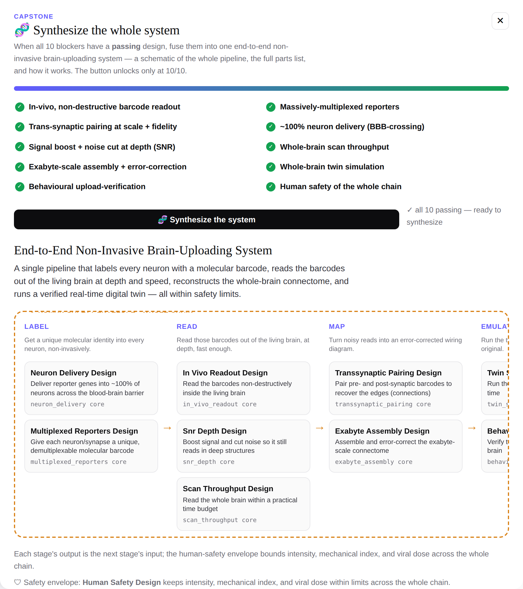
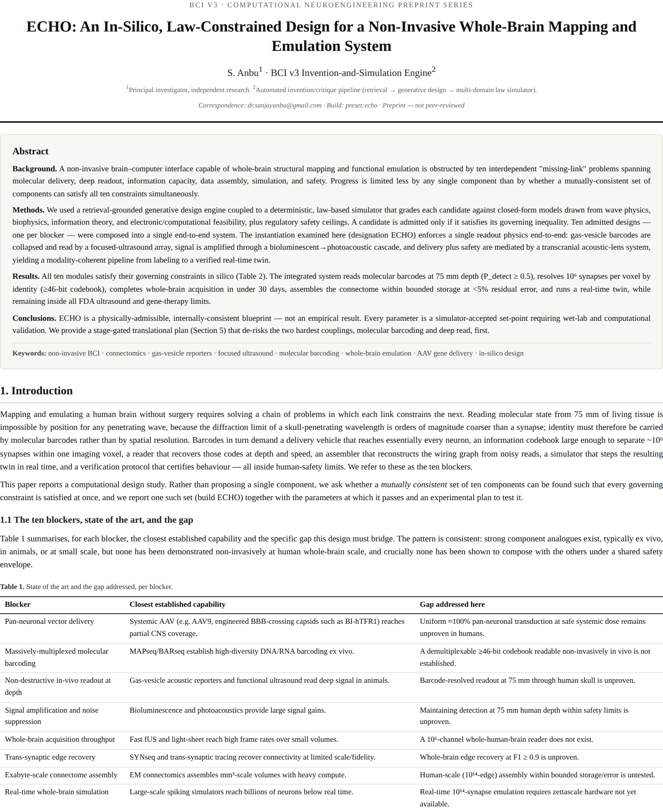
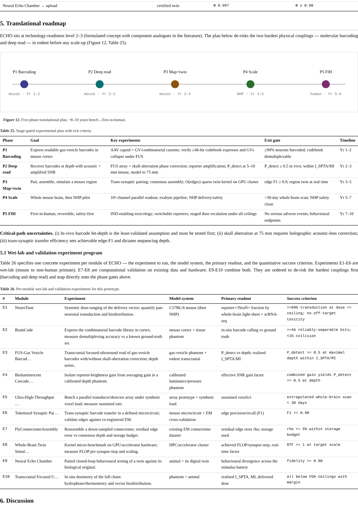

BCI v3 is a retrieval-grounded invention engine paired with a law-based simulator. It proposes designs for the ten hardest unsolved problems between a living brain and a verified digital twin — then grades every one against real biophysics, wave physics, information theory, and FDA safety limits. A design passes only if the physics permits it.
A non-invasive interface that can map and emulate a whole brain is obstructed less by any single component than by whether a mutually-consistent set of components can satisfy every constraint at once — molecular delivery, deep readout, information capacity, data assembly, real-time simulation, and human safety. BCI v3 makes that search concrete: it invents candidate solutions, grades them against the laws that govern them, and fuses the ten passing designs into one end-to-end system.



Hand-pick which invention feeds each of the ten stages, or use one of six ready-made, internally-coherent presets. Every build is saved as a reusable prototype.
bci synthesize --preset echo # or lumen | swift | guardian | titan | vanguard
bci synthesize --list-presets # show all sixAny saved prototype exports as a ~25–30 page journal-style paper: structured abstract, governing equations, per-blocker sections with computed figures, an integrated interface budget, a stage-gated translational roadmap, and a per-module wet-lab experiment program. Every number is a value the law simulator actually accepted — the document a lab would work from.


Local-LLM-first (Qwen via Ollama), with NVIDIA NIM and a rule-based fallback that needs no LLM at all. MongoDB for storage, JSONL when it's down.
pip install -e backend
bci serve # cockpit + API on one port → http://localhost:8000/app/
bci record multiplexed_reporters "acoustic, deep, safe" --constraint noninvasive
bci synthesize --preset echo